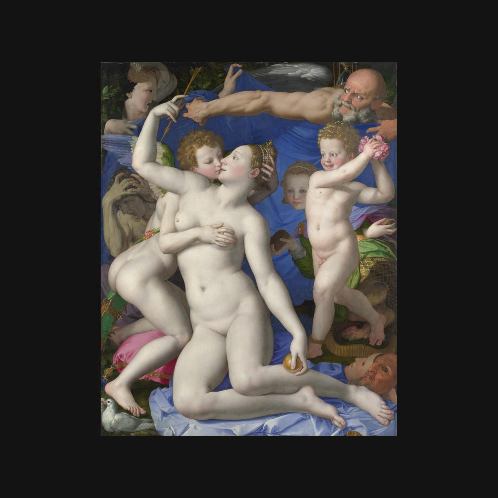

维纳斯与丘比特的寓意画
布龙齐诺 · 约1545年
An Allegory with Venus and Cupid
讲解节选
接吻的两个人，手上却各有动作：她取走他的箭，他试图偷她的冠。
画的是维纳斯和她的儿子、爱神丘比特。这幅《维纳斯与丘比特的寓意画》，由布龙齐诺约在一五四五年绘制，现藏伦敦国家美术馆。它是木板油画，高一百四十六点一厘米，宽一百一十六点二厘米。布龙齐诺师从蓬托尔莫，在佛罗伦萨的美第奇宫廷工作。
— 普通话讲稿 · Artvery
完整讲解约 4 分钟，在 Artvery App 里收听。粤语、台湾国语、内地普通话三种语音，馆内对准作品即可识别播放。
即将上架 App Store
App 即将上架，敬请期待。上架后免费下载，每座博物馆单独购买，一次购买永久使用。
作品信息
- 作者
- 布龙齐诺
- 年代
- 约1545年
- 尺寸
- 146.1 × 116.2 厘米
- 所在
- 伦敦国家美术馆 · 16 世纪绘画
- 馆藏编号
- NG651
伦敦国家美术馆参观攻略：必看名作和路线 · 伦敦国家美术馆中文语音导览